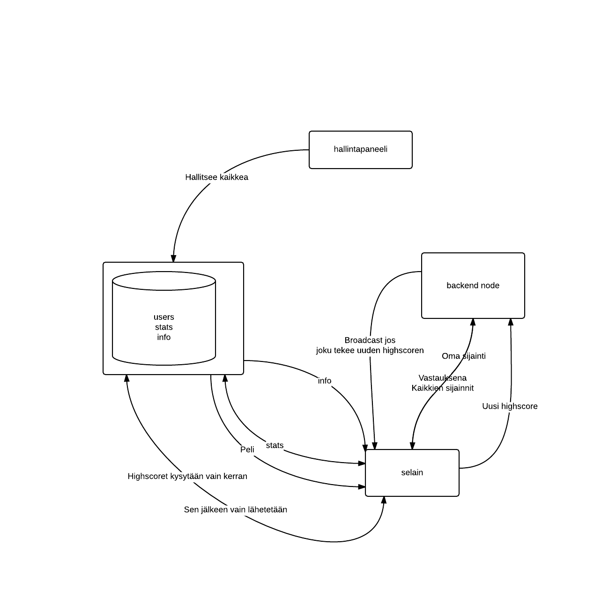

Tässä raportti kurssin CT30A3201 WWW-sovellukset toisen harjoitustyön osalta. Harjoitustyöaiheista valitsin ensimmäisen ( a ) ja siinä tehtävänä oli pidentää edellisessä harkkatyössä kehiteltyä peliä eteenpäin. Näin en kuitenkaan tehnyt, koska tunsin että moninpeliksi suunnittelemani peli olisi hiukan tylsähkö jos sen rakentaisi pasianssin päälle, joten aloitin alusta.
All hail, we has 3d. Aloittaessani pelin rakentelua huomasin että tällä kertaa ohjeet eivät suoraan kiellä graafisten kirjastojen käyttöä! whoohoo! Eli päätin rakentaa omani three.js päälle. Three.js on webgl kirjasto, joka monen muun web kirjaston tapaan on jaettu itse core osaan ja plugareihin. plugareista käytin Detector.js (muutama kymmentä riviä jotka tarkastavat ja ilmoittavat selaimen kyvyn käyttää webGL.) sekä ColladaLoader.js. Viimeinen on yksinkertainen 3d formaatin lataaja. (Collada eli .dae tiedostot pitävät sisällään lähes kaiken datan mitä 3d mallinnus ohjelmista vaan voi saada ulos, mukaanlukien animaatiot). Lisäksi pelin fysiikkamoottorina toimii Physijs, joka sekin Three.js plugari.
Vaadituista ominaisuudet:
Pelissä pystyy pelaamaan joko vieraana (guest) tai kirjautumalla sisään. Vieraspelaajien huipputulokset jäävät ainoastaan talteen lokaalisti selaimen localStorageen. Rekisteröitymällä pelaaja pääsee top10 listalle ollessaan tarpeeksi hyvä, sekä pystyy tallentaamaan sopimatonta tietoa itsestään palvelimille. Kaikki tämä ajaxilla.
Pelaaja pystyy kirjautuessaan sisään tallentamaan itsestään tietoja, kuten rodun, uskonnon ja kotipaikkakunnan. En keksinyt muutakaan.
Vaaditut tekniset ominaisuudet:
Harjoitustyössä on vain kaksi ladattavaa sivua, peli ja hallintapaneli. Kaikki muu toimii ajaxilla.
Autentikaatio toimii php:llä ja ajaxilla. Palvelimella on sqlite tietokanta, jossa on käyttäjätaulu. Tässä taulussa on sha512 hashattuja salasanoja ja suolaa. Niitä hyväksikäyttäen pelaaja autentikoidaan. Käyttäjä kryptaa selaimellaan halutun salasanan ja sitä testataan databasesta löydettyyn salasanaan.
Suurin osa autentikaatiosta on tehty näiden ohjeiden mukaan:
Create-a-Secure-Login-Script-in-PHP-and-MySQL
Siinä on ohjeet siihen, miten homma toimii pelkällä php:llä ja mysql. Noiden ohjeiden mukaan on käännetty ajax ja sqlite versio. Kuten joku fiksu tietoturvaihminen sanoi, älä keksi pyörää uudestaan tietoturva-asioissa. Käytetään ammattilaisten suosimaa tekniikkaa.
Pelin mobiiliasettelu on hoidettu yksinkertaisesti. Pelin ruutu pysyy koko ajan 5:4 koossa. Tämä sen takia, että olisi epäreilua mikäli eri pelaajat näkisivät eri määrän pelin maailmasta, eli voisivat ennakoida tulevien putkien paikkoja. Tämä kätevästi käännettynä tarkoittaa sitä että siinä syy miksi se näyttää siltä. Ja peliä pystyy pelaamaan mobiililla, mutta selaimen kuuluu olla Chrome ja järjestelmän Android. Safari+iPhone5s ei pysty kykenemään kun kyseessä on WebGL
Käyttäjien syötteen validointi handlataan ajaxilla ja regexpillä. Aina ennen postin lähtemistä js katsoo kuhunkin tilanteeseen vaaditut speksit ja lisää tekstiä mikäli jostain kiikastaa. rekisteröinnissä jopa kursori siirretään paikalleen kun jotain mättää. Cool!
SQL tietokanta löytyy, jossa taulut users (uid, username, password, salt, highscore), stats (uid, count eli pelien määrä, distance eli yhteensä kuljettu matka) ja info (race, religion ja hometown). Näistä rekisteröityessään pelaaja näkee omat tietonsa statsista, ja pystyy jopa muokkaamaan omaa infoaan. Hallintapaneelista näkee ja muokkaa kaikkea. Lisäksi lisäsin users tauluun ban muuttujan, jonka ollessa yksi (1) pelaaja ei pysty kirjautumaan sisään ja peli ilmoittaa että username has been banned.
HTML5 tekniikoita? webgl... bles. No jonkin verran myös jQueryn transitioneita mitkä pohjautuu css3 ymmärtääkseni.
LISÄKSI yksi pakollisesta kolmesta lisäominaisuudesta on minun kohdallani ensimmäinen eli moninpeli. En tosin käytä pollausta, mutta websocketit on paljon päheämpiä. MMO FTW!
Vähän loppui innostus kesken kun läppäri otti ja hajosi kesken kaiken, tässä pöytäkoneella istuminen monta tuntia putkeen ketuttaa. No mutta ei siinä. Toteuttamatta jätin MemCachedin käytön koska sitä en pysty asentamaan omalle devauspalvelimelleni :( mut viikkotehtävän tein :D.
Itse peli on ei ole tehty ja optimoitu kaiken massan pelattavaksi. Lähinnä kiinnosti erilaisten tekniikoiden, kuten WebGL käyttäminen peleissä. En myöskään ole ennen nodea käyttänyt saati MMO:ta rakennellut.
Kuten aikaisemmin oli mainittu autentikaatio oli rakennettu sen wikihowton päälle. Ne kooditiedostot on kirjoitettu joskus kesän jälkeen, ja jälki on sen näköistä. Siellä löytyy esim funktions.php tiedostosta login_check() jota käytetään aivan typerästi. Muutenkaan virheiden käsittely ei ole kovin viisasta vanhemmassa koodissa. Eli jossain on parannuttu syksyn aikana! nyt kun katsoo viimeisintä tiedostoa jonka kirjoitin eli ban.php niin onhan se aikamoinen if helvetti, ja sitä vastaava js aikamoinen callback helvetti, mutta ainakin on turvallista ja toimivaa koodia. Ja antaa kivasti paluuarvoina selaimelle oikean virheilmoituksen, helpottaa koodin rakentamista kun tietää koko ajan missä kohtaa php:tä tulee virhe.
Muuten ollut tosi kiva kurssi, kiitos ja anteeksi.
Lähteitä:
latausanimaatio: http://codepen.io/JesGraPa/pen/Hyaiw
Toteutettu nopasta löytyvät linkin takana löytyvällä html editorilla että luulisi tulevan pojoja!
Kuten kaaviosta nähdään, peli on jaettu kahdelle serverille. Toisella pyörii node ja toinen vain tarjoaa pelin selaimelle. Tämä ihan sen takia että node.js serverin pyörittäminen maksaa kun en tiennyt että se löytyy myös harjoituspalvelimelta. Jos nyt sammutan moninpeliserverin niin peli toimii yksinpelinä ihan normaalisti. Sqlite tietokanta löytyy pelin varsinaiselta serveriltä. Sen rasitusta estääkseni (oletetaan että pelaajia olisi monia) niin highscoret haetaan vain kerran, minkä jälkeen uudet parhaat pisteet saadaan moninpeliserverin kautta. Hallintapaneeli löytyy samasta polusta pelin kanssa admin/ kansiosta. Siltä sivulta pystyy muokkaamaan kaikkea.